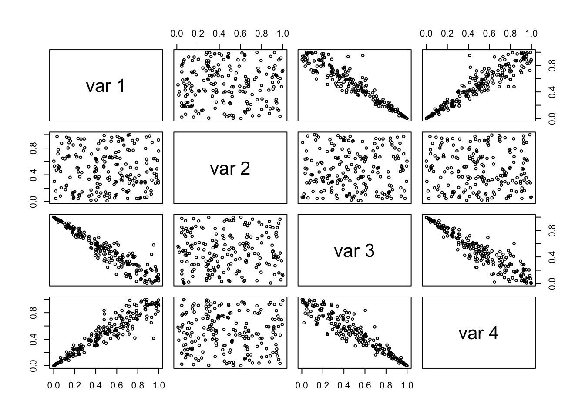

Cort & CortForest Example on clayton-based simulation
2020-03-28
Source:vignettes/cort_clayton.Rmd
cort_clayton.RmdFirst, let’s create and plot the dataset we will work with. For that, we’ll use the gamma frailty model for the Clayton copula (but it’ll work for any other completely monotonous archimedean generator), as it is done in the copula package, see there
psi <- function(t,alpha) (1 + sign(alpha)*t) ^ (-1/alpha) # generator rClayton <- function(n,dim,alpha){ val <- matrix(runif(n * dim), nrow = n) gam <- rgamma(n, shape = 1/alpha, rate = 1) gam <- matrix(gam, nrow = n, ncol = dim) psi(- log(val) / gam,alpha) }
We can now simulate our dataset and visualise it. Note that, for reproducibility reasons, we set the random number generator.
set.seed(12,kind = "Mersenne-Twister",normal.kind = "Inversion",sample.kind = "Rejection") n = 30 # taken small to reduce runtime of the vignette. d = 4 n_trees = 2 # taken small to reduce runtime of the vignette. number_max_dim_tree = 4 number_max_dim_forest = 2 # taken small to reduce runtime of the vignette. data <- matrix(nrow=n,ncol=d) data[,c(1,4,3)] = rClayton(n=n,dim=d-1,alpha=7) data[,2] = runif(n) data[,3] <- 1 - data[,3] pairs(data,cex=0.6)

Now that we have our dataset, we could for example run a Cort model on it. Note that the verbosity level is quite progressive. We will here put it on 4 to have debug-level info to see what’s the algorithm is doing, without having the nloptr::slsqp routine outputs.
(model = Cort(data,verbose_lvl=4,number_max_dim = number_max_dim_tree)) #> Splitting... #> #> 1 leaves to split... #> Leaf with 30 points. #> min max bp p_value action reason #> 1 0 1 0.77855798 0.000000 Splitted #> 2 0 1 0.62339541 0.250501 Splitted #> 3 0 1 0.31007341 0.000000 Splitted #> 4 0 1 0.77855798 0.000000 Splitted #> #> #> 5 leaves to split... #> Leaf with 15 points. #> min max bp p_value action reason #> 1 0.00000000 0.77855798 0.42373872 0.022044088 Splitted #> 2 0.00000000 0.62339541 0.34309724 0.454909820 Splitted #> 3 0.31007341 1.00000000 0.59382242 0.000000000 Splitted #> 4 0.00000000 0.77855798 0.41916796 0.000000000 Splitted #> #> Leaf with 2 points. #> min max bp p_value action reason #> 1 0.00000000 0.77855798 0.74878332 0.00000000 Removed Close to boundary #> 2 0.62339541 1.00000000 0.85614288 0.27054108 Splitted #> 3 0.00000000 0.31007341 0.21558984 0.38677355 Splitted #> 4 0.00000000 0.77855798 0.70959657 0.00000000 Removed Close to boundary #> #> Leaf with 6 points. #> min max bp p_value action reason #> 1 0.00000000 0.77855798 0.032263128 0.19639279 Removed Close to boundary #> 2 0.62339541 1.00000000 0.707948789 1.00000000 Removed Independence test #> 3 0.31007341 1.00000000 0.963680686 0.20440882 Removed Close to boundary #> 4 0.00000000 0.77855798 0.034153240 1.00000000 Removed Independence test #> #> Leaf with 2 points. #> min max bp p_value action reason #> 1 0.77855798 1.00000000 0.903216393 0.166332665 Splitted #> 2 0.00000000 0.62339541 0.172076449 0.026052104 Splitted #> 3 0.00000000 0.31007341 0.032296353 0.060120240 Removed Close to boundary #> 4 0.77855798 1.00000000 0.903216394 0.184368737 Splitted #> #> Leaf with 3 points. #> min max bp p_value action reason #> 1 0.77855798 1.00000000 0.87326252 0.366733467 Splitted #> 2 0.62339541 1.00000000 0.68542007 0.238476954 Splitted #> 3 0.00000000 0.31007341 0.19351812 0.090180361 Splitted #> 4 0.77855798 1.00000000 0.94844151 0.134268537 Splitted #> #> #> 4 leaves to split... #> Leaf with 4 points. #> min max bp p_value action reason #> 1 0.00000000 0.42373872 0.32254895 0.14829659 Splitted #> 2 0.00000000 0.34309724 0.20084077 0.69138277 Splitted #> 3 0.59382242 1.00000000 0.67908639 0.12625251 Splitted #> 4 0.00000000 0.41916796 0.32013885 0.24248497 Splitted #> #> Leaf with 2 points. #> min max bp p_value action reason #> 1 0.00000000 0.42373872 0.29030832 0.49298597 Splitted #> 2 0.34309724 0.62339541 0.54466966 1.00000000 Removed Independence test #> 3 0.59382242 1.00000000 0.75280581 0.44889780 Splitted #> 4 0.00000000 0.41916796 0.31276725 0.50501002 Splitted #> #> Leaf with 2 points. #> min max bp p_value action reason #> 1 0.42373872 0.77855798 0.51638429 0.47695391 Splitted #> 2 0.00000000 0.34309724 0.29031876 0.48897796 Removed Close to boundary #> 3 0.31007341 0.59382242 0.50985468 0.52104208 Splitted #> 4 0.41916796 0.77855798 0.58439585 0.41683367 Splitted #> #> Leaf with 3 points. #> min max bp p_value action reason #> 1 0.42373872 0.77855798 0.42408683 0.082164329 Removed Close to boundary #> 2 0.34309724 0.62339541 0.62310455 0.466933868 Removed Close to boundary #> 3 0.31007341 0.59382242 0.59349301 0.382765531 Removed Close to boundary #> 4 0.41916796 0.77855798 0.41951576 0.066132265 Removed Close to boundary #> #> #> 1 leaves to split... #> Leaf with 2 points. #> min max bp p_value action reason #> 1 0.00000000 0.32254895 0.250114801 1.000000000 Removed Independence test #> 2 0.00000000 0.20084077 0.032263736 0.072144289 Removed Close to boundary #> 3 0.67908639 1.00000000 0.750706197 1.000000000 Removed Independence test #> 4 0.00000000 0.32013885 0.240886510 0.046092184 Dissmissed No one-dim split #> #> #> 0 leaves to split... #> Enforcing constraints... #> ----------------------------------------------------------------- #> OSQP v0.6.0 - Operator Splitting QP Solver #> (c) Bartolomeo Stellato, Goran Banjac #> University of Oxford - Stanford University 2019 #> ----------------------------------------------------------------- #> problem: variables n = 85, constraints m = 140 #> nnz(P) + nnz(A) = 3248 #> settings: linear system solver = qdldl, #> eps_abs = 1.0e-06, eps_rel = 1.0e-06, #> eps_prim_inf = 1.0e-06, eps_dual_inf = 1.0e-06, #> rho = 1.00e-01 (adaptive), #> sigma = 1.00e-06, alpha = 1.60, max_iter = 100000 #> check_termination: on (interval 25), #> scaling: on, scaled_termination: off #> warm start: on, polish: on, time_limit: off #> #> iter objective pri res dua res rho time #> 1 -2.6445e+01 3.77e-02 3.86e+03 1.00e-01 6.90e-04s #> 150 -2.4093e+01 3.01e-07 1.99e-04 6.56e-01 2.70e-03s #> #> status: solved #> solution polish: unsuccessful #> number of iterations: 150 #> optimal objective: -24.0928 #> run time: 4.86e-03s #> optimal rho estimate: 1.03e+00 #> #> Done ! #> Cort copula model: 30x4-dataset and 85 leaves.
Let’s visualise it :
pairs(model)
We see that there are some noise with point were there should not be. We could use bagging to try to remove these :
(bagged_model = CortForest(data,verbose_lvl = 2,n_trees=n_trees,number_max_dim=number_max_dim_forest)) #> ======================== Tree 1 over 2 #> Splitting... #> #> 1 leaves to split... #> #> 3 leaves to split... #> #> 7 leaves to split... #> #> 7 leaves to split... #> #> 7 leaves to split... #> #> 5 leaves to split... #> #> 1 leaves to split... #> #> 0 leaves to split... #> Enforcing constraints... #> Done ! #> ======================== Tree 2 over 2 #> Splitting... #> #> 1 leaves to split... #> #> 3 leaves to split... #> #> 4 leaves to split... #> #> 8 leaves to split... #> #> 5 leaves to split... #> #> 1 leaves to split... #> #> 0 leaves to split... #> Enforcing constraints... #> Done ! #> ======================== Computing statistics... #> Computing pmf... #> Computing norm matrix... #> Computing oob stats... #> ------tree 2 / 2 #> ======================== Done ! #> CortForest copula model: 30x4-dataset and 2 Cort trees.
The same plot is avaliable for the forest :
pairs(bagged_model)